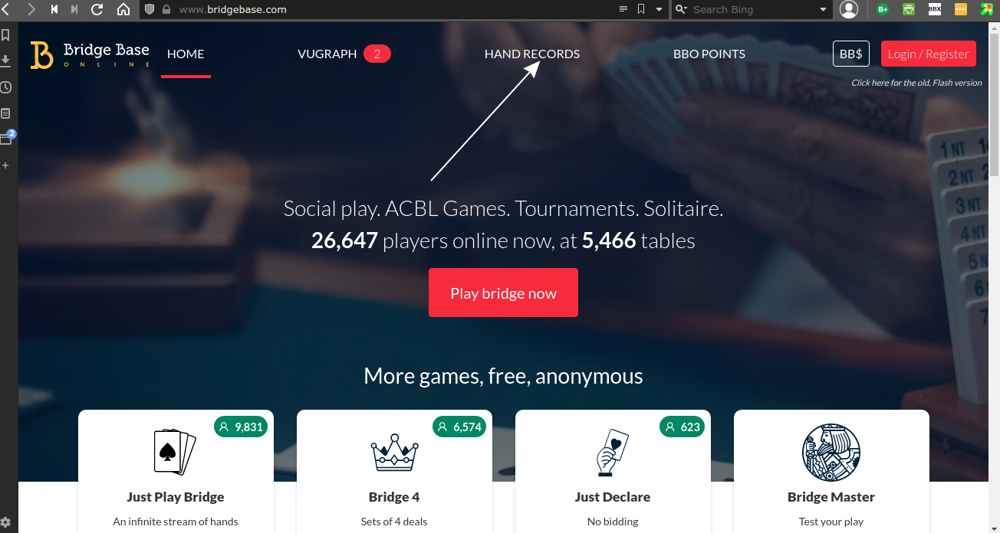
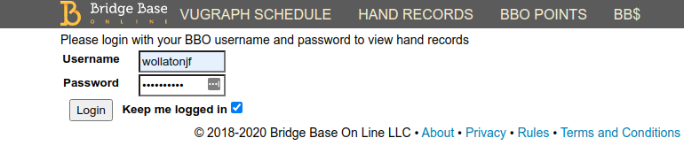
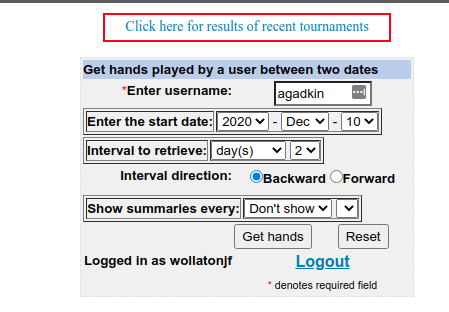
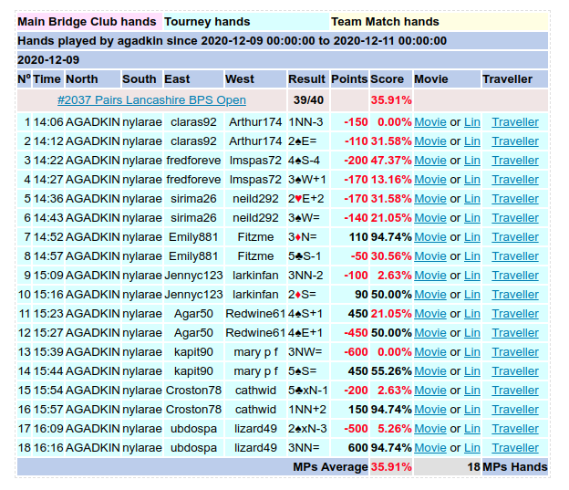
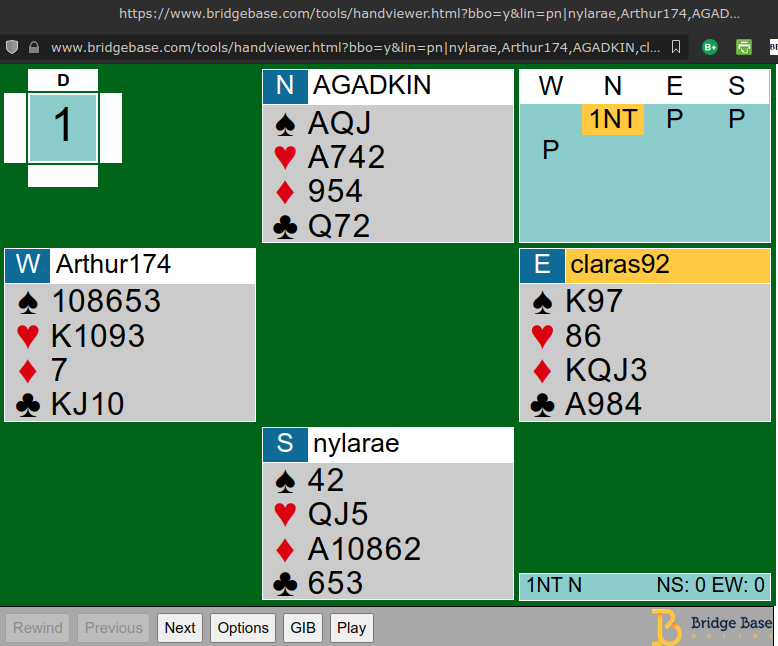
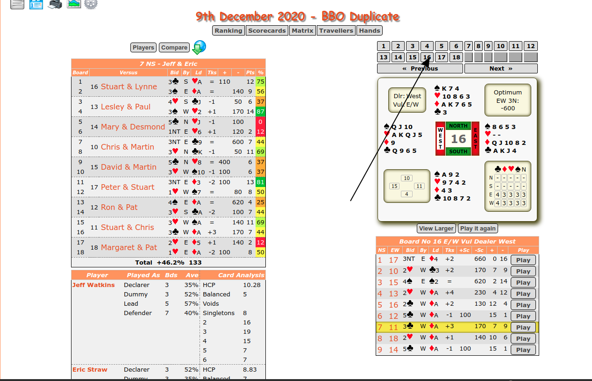
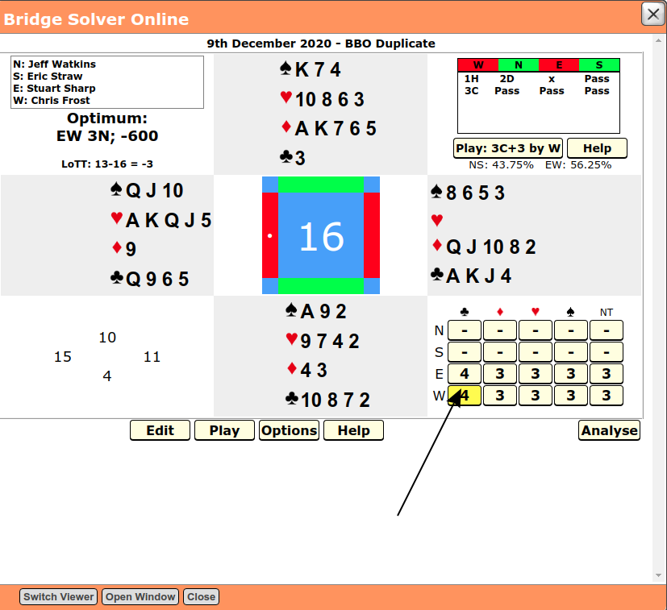
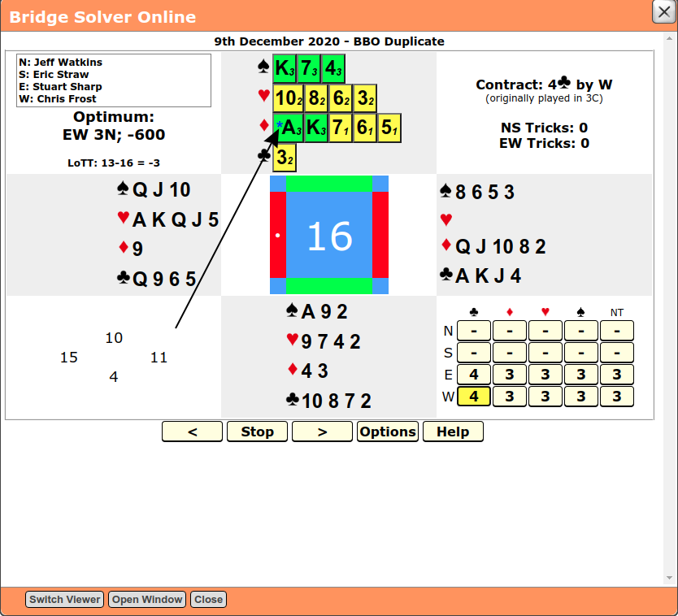

Replaying hands¶
It is possible to replay hands after the end of the tournament. This might be useful if, for example, there should be a query on the scoring. This can be done through the BBO website, or, if the scores have been uploaded to BridgeWebs, on the Phoenix website.
Replaying hands on BBO¶
Navigate to the top level BBO page (use the url https://www.bridgebase.com)
and click on HAND RECORDS
Login
Enter the BBO user name of the player you are interested in and the date range
and click on Get hands
You will be presented with a list of hands from the date range
Find the hand that you want and click on Movie
You will see the hand
You can elect to play next card or trick by changing the Options
Replaying hands on Phoenix Web Site¶
You can only use this option if the scores for the tournament have been uploaded.
Go to the tournament scores for the event and select the player you are interested in. Click on the board in question.
The score for the board is highlighted in yellow. Click on the Play button
The Bridge Solver window will open
Select the suit of the contract (the actual contract might not appear)
The opening lead card is shown with an asterisk
Click on > to play the next card or < to play the previous one.